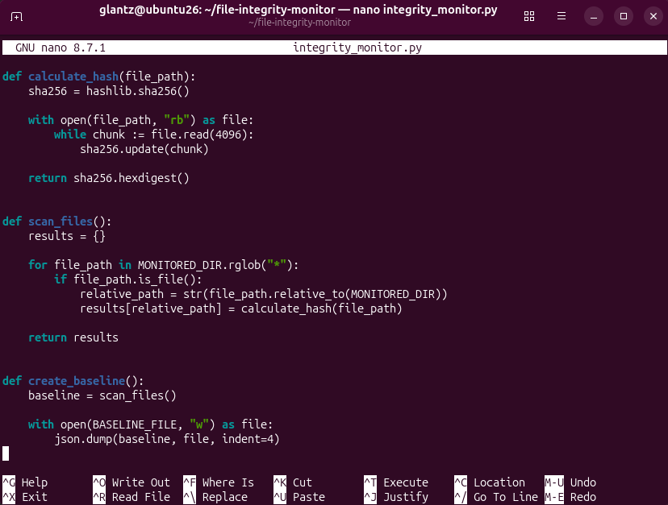
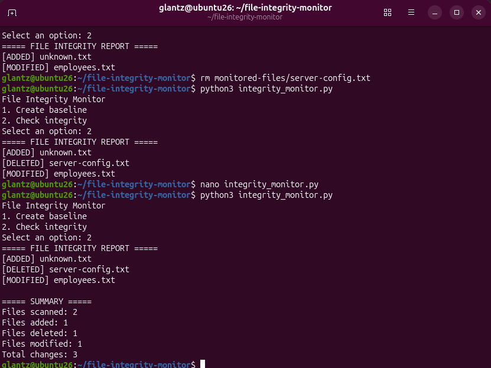
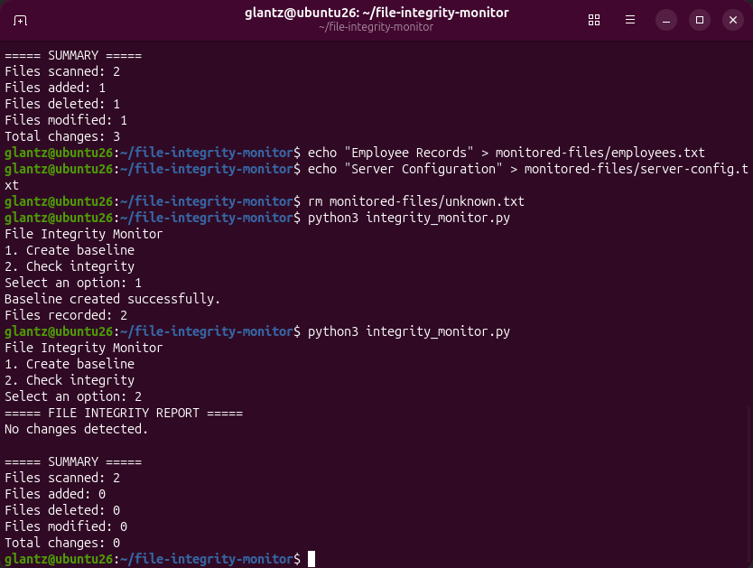

Python Security Project
File Integrity Monitor
Built a Python-based file integrity monitoring tool that uses SHA-256 hashing to create a trusted baseline and detect files that have been added, deleted, or modified.
Overview
Project Goals
The goal of this project was to understand how cryptographic hashes can be used to detect unexpected or unauthorized changes to files.
I created a Python program that scans a monitored directory, calculates a SHA-256 hash for each file, stores those hashes in a trusted baseline, and compares future scans against that baseline.
The monitor can identify files that have been added, deleted, or modified and generates a summary showing the number of changes detected.
How It Works
SHA-256 Hashing and File Scanning
The program uses Python's hashlib library to generate
a SHA-256 hash for each monitored file.
Each file is opened in binary mode and read in chunks. The file contents are passed into the SHA-256 hashing function, producing a unique hexadecimal fingerprint for the file's current contents.
The program recursively scans the
monitored-files directory and stores each file's hash
using its relative path.

If the contents of a file change, its SHA-256 hash changes as well. This allows the program to detect that the file no longer matches the trusted baseline.
Baseline
Creating a Trusted File Baseline
When the user selects the baseline option, the program scans the monitored directory and calculates the SHA-256 hash of every file.
These hashes are stored in baseline.json. The JSON
file represents the trusted state of the monitored directory at
the time the baseline was created.
Future integrity checks compare the current directory state against this stored baseline.
Detection
Detecting File Changes
I tested the monitor by simulating three different types of file changes.
-
Added a new file named
unknown.txt -
Deleted
server-config.txt -
Modified the contents of
employees.txt
The program compared the current directory against the saved baseline and correctly identified all three changes.

The final report clearly labels each type of integrity event:
[ADDED]— a new file was detected[DELETED]— a baseline file was missing-
[MODIFIED]— a file's SHA-256 hash no longer matched the baseline
The report also summarizes the number of files scanned and the total number of detected changes.
Verification
Clean Integrity Check
After testing the change-detection logic, I restored the monitored files to their expected state and created a new trusted baseline.
I then performed another integrity check without changing any of the files.

The monitor correctly reported that no changes were detected and returned zero added, deleted, modified, and total changes.
This demonstrated that the program could identify actual differences while also producing a clean result when the monitored directory still matched the trusted baseline.
Technologies
Tools and Technologies Used
- Ubuntu Linux
- Python 3
- Python
hashlib - SHA-256 hashing
- JSON
- Python
pathlib - Linux command line
Skills Demonstrated
What I Practiced
- Python scripting
- File integrity monitoring
- Cryptographic hashing
- SHA-256
- File and directory operations
- Recursive directory scanning
- Baseline creation and comparison
- JSON data storage
- Security monitoring concepts
- Testing and verification
- Linux command-line administration
Takeaway
What I Learned
This project helped me understand how file integrity monitoring can detect changes without needing to know exactly what was changed inside a file.
A trusted hash represents the expected state of a file. When the contents change, the calculated hash changes as well, allowing the program to identify that the current file no longer matches the baseline.
Building the tool also gave me more experience using Python for cybersecurity tasks, working with files and directories, storing structured data in JSON, and testing security-related scripts against multiple scenarios.